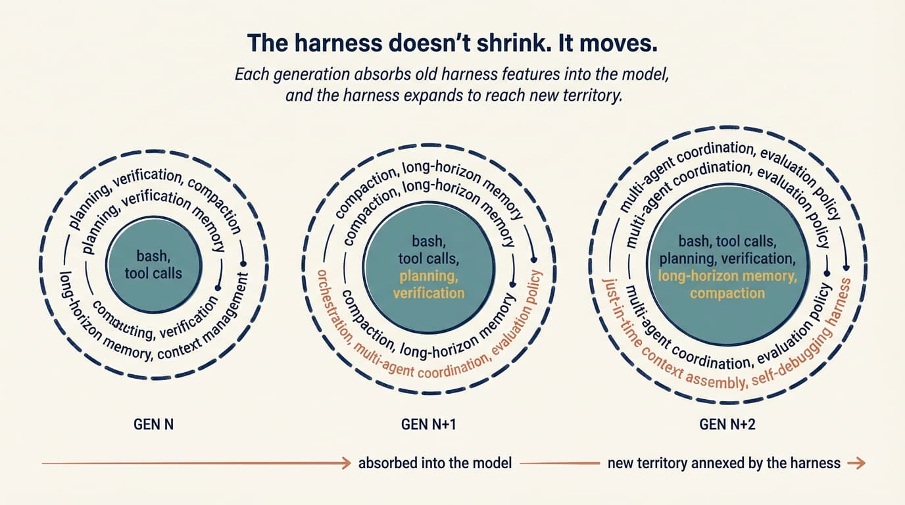

程式設計代理（coding agent）是模型，加上你圍繞它打造的一切。代理工具鏈工程（harness engineering）把這些支架視為真正的產出物；每當代理失手，工具鏈（harness）就會再收緊一點。
簡單說，每次你發現代理犯錯，就花時間設計一個解法，讓它再也不犯同一個錯。
過去兩年，我們一直在爭論模型：哪個最聰明、哪個寫 React 最乾淨、哪個幻覺最少。這些討論有它的範圍，但少了系統的另一半。模型只是執行中代理的一項輸入。其餘部分就是工具鏈（harness）：包在模型周圍的提示、工具、脈絡政策（context policies）、hook、沙箱、子代理（subagents）、回饋迴路與復原路徑，讓代理真的能完成工作。
普通模型配上出色工具鏈，勝過出色模型配上糟糕工具鏈。我在自己的工作中一次又一次看到這件事。如今，真正有趣的工程越來越不在挑選模型，而在設計包圍模型的支架。
這門工作現在有了名字。Viv Trivedy 創造了「工具鏈工程」一詞，他的 〈代理工具鏈剖析（Anatomy of an Agent Harness）〉是目前最清楚的推導，說明工具鏈究竟是什麼，以及每個部分為何存在。Dex Horthy 一直在追蹤這個逐漸成形的模式。HumanLayer 把多數代理失敗描述為「技能問題」，歸因於設定而不是模型權重。Anthropic 工程團隊發表了我認為目前公開資料中，關於如何為長時間工作設計工具鏈的最佳拆解。Birgitta Böckeler 則從使用者角度概述了這種做法。
這篇文章試著把這些線索串在一起。
工具鏈究竟是什麼？（What is a harness, really?）
Viv 的一句話已經涵蓋大部分內容：
代理＝模型＋工具鏈。如果你不是模型，你就是工具鏈。
工具鏈是除了模型本身之外的每一段程式碼、設定與執行邏輯。原始模型不是代理；工具鏈給它狀態、工具執行、回饋迴路與可強制執行的限制之後，它才成為代理。

具體來說，工具鏈包含：
- 系統提示、
CLAUDE.md、AGENTS.md、skill 檔案與子代理提示 - 工具、skill、MCP 伺服器及其描述
- 隨附的基礎設施：檔案系統、沙箱、瀏覽器
- 編排邏輯：產生子代理、交接、模型路由
- 用於確定性執行的 hook 與中介軟體：壓縮、延續、linter 檢查
- 可觀測性（observability）：日誌、追蹤、成本與延遲量測
Simon Willison 把迴路部分化約到本質：代理是「在迴路中執行工具來達成目標」的系統。真正的技巧在於同時設計工具與迴路。
如果這聽起來涵蓋很多面向，那是因為確實如此。而且這些面向是你的，不是模型供應商的。Claude Code、Cursor、Codex、Aider、Cline 都是工具鏈。底層模型有時相同，但你感受到的行為，主要由工具鏈決定。
coding agent = AI model(s) + harness這個由 Viv 提出、HumanLayer 呼應的等式，正是實際工作的所在。左側的辯論聲量很大；真正的槓桿大多在右側。
重新框定「技能問題」（The “skill issue” reframe）
我常看到工程師陷入同一種模式：代理做了蠢事，工程師怪模型，然後把責任歸到「等下一版」這件事上。
工具鏈工程的思維拒絕這個預設。失敗原因通常看得出來。代理不知道某個慣例，所以你把它加進 AGENTS.md。代理執行了破壞性指令，所以你加一個能阻擋它的 hook。代理在 40 步的任務中迷路，所以你把工作拆成規劃者與執行者。代理一直「完成」有問題的程式碼，所以你把型別檢查的回壓訊號接回迴路。
HumanLayer 說：「這不是模型問題，而是設定問題。」當你認真看待這句話，工具鏈工程就會出現。
Viv 的文章和 HumanLayer 的文章都提到一個引人注意的數據點。在 Terminal Bench 2.0 上，Claude Opus 4.6 放在 Claude Code 裡執行時，分數遠低於同一模型在自訂工具鏈中執行的成績。Viv 的團隊只改變工具鏈，就把一個程式設計代理從前 30 名帶到前 5 名。模型的後訓練會和訓練時使用的工具鏈綁在一起。把模型放進另一個工具鏈，為你的程式碼庫提供更好的工具、更緊的提示和更銳利的回壓，就可能解鎖原本工具鏈沒有發揮的能力。
這和「只要等 GPT-6」的敘事正好相反。今天的模型能做到什麼，和你實際看到它做到什麼之間的落差，很大一部分是工具鏈落差。
棘輪：每次錯誤都變成規則（The ratchet: every mistake becomes a rule）
工具鏈工程最重要的習慣，是把代理的錯誤視為永久訊號。不是拿來取笑的一次性故事，也不是重試一次的「糟糕執行」。它們是訊號。
如果代理送出一個含有註解掉的測試的 PR，而我不小心合併了，那就是一項輸入。下一版 AGENTS.md 會寫著：「絕不要把測試註解掉；刪除它，或修好它。」下一版 pre-commit hook 會在差異中搜尋 .skip( 和 xit(。下一版審查子代理會把註解掉的測試標成阻擋項目。
只有看過真實失敗，才加入限制。只有當有能力的模型已經不再需要限制，才移除它。好的 AGENTS.md 每一行，都應該能追溯到某件具體出錯的事。
這也是工具鏈工程是一門實踐而不是框架的原因。適合你程式碼庫的工具鏈，是由失敗歷史塑造的。你無法下載它。
從行為倒推設計（Working backwards from behaviour）
Viv 的一套說法，在我實際設計工具鏈時最有用：從你想要的行為開始，推導出能提供該行為的工具鏈元件。他的模式是：我們想要或想修正的行為 → 協助模型達成這個行為的工具鏈設計。

這樣推導的好處，是每個工具鏈元件都有明確工作。如果你說不出一個元件要交付什麼行為，它大概就不該存在。
本節其餘內容大致依照 Viv 的順序，逐一說明值得借用的部分。
檔案系統與 Git：持久狀態（Filesystem and Git: durable state）
檔案系統是最基礎的原語，但因為它很無聊，往往被低估。模型只能直接操作放得進脈絡的內容。沒有檔案系統，你只能把內容複製貼上到聊天視窗，這不能算工作流。
有了檔案系統，代理就有了讀取資料、程式碼和文件的工作區；也有了卸載中間產出的地方，不必把它們全放在脈絡裡；更有了讓多個代理與人類透過共用檔案協作的介面。再加上 Git，就能免費取得版本控制，讓代理追蹤進度、回復錯誤並分支嘗試。
其他大多數工具鏈原語，最後都得靠檔案系統處理某件事。
Bash 與程式碼執行：通用工具（Bash and code execution: the general-purpose tool）
今天的主要代理迴路是 ReAct 迴路：模型推理，透過工具呼叫採取行動，觀察結果，再重複。可是工具鏈只能執行它有邏輯支援的工具。你可以為每一種可能的行動預先打造工具，也可以給代理 bash，讓它即時打造需要的工具。
Willison 的看法是，代理本來就很擅長 shell 指令；大多數任務都能化約為幾次選得好的 CLI 呼叫。工具鏈仍會提供聚焦的工具，但 bash 加上程式碼執行，已經成為自主解題的預設通用策略。這就像教人使用單一廚房器具，和把整間廚房交給他之間的差別。
沙箱與預設工具（Sandboxes and default tooling）
bash 只有在安全的地方執行才有用。在自己的筆電上執行代理產生的程式碼很危險，而單一本機環境也無法支援許多平行代理。
沙箱為代理提供隔離的作業環境。工具鏈不在本機執行，而是連到沙箱來執行程式碼、檢查檔案、安裝相依套件和驗證工作。你可以設定允許的指令清單、強制網路隔離、按需啟動新環境，並在任務結束後拆除它們。
好的沙箱會提供好的預設值：預先安裝的語言執行環境與套件、Git 和測試 CLI，以及用來和網站互動的無頭瀏覽器。瀏覽器、日誌、螢幕截圖和測試執行器，讓代理能觀察自己的工作並完成自我驗證迴路。
模型不會設定自己的執行環境。決定代理在哪裡執行、有哪些可用資源，以及如何驗證輸出，都是工具鏈層級的決定。
記憶與搜尋：持續學習（Memory and search: continual learning）
模型除了權重與目前脈絡中的內容之外，沒有其他知識。不能編輯權重時，增加知識的唯一方式就是脈絡注入（context injection）。
檔案系統又一次成為原語。工具鏈支援 AGENTS.md 這類記憶檔案標準，並在每次啟動時注入。代理編輯這個檔案後，工具鏈會重新載入它，一個工作階段的知識就能延續到下一個工作階段。這是持續學習的一種粗糙但有效的形式。
對於訓練時不存在的知識，例如新版本的函式庫、最新文件和今天的資料，網路搜尋與 Context7 這類 MCP 工具可以跨過知識截止點。與其把這些能力留給使用者，不如把它們做成工具鏈的內建原語。
對抗脈絡腐化（Battling context rot）
脈絡腐化（context rot）指的是：脈絡視窗逐漸填滿後，模型的推理和完成任務能力會變差。脈絡很稀缺，而工具鏈很大程度上就是優質脈絡工程的傳遞機制。
有三種技術反覆出現：
壓縮（Compaction）。視窗接近填滿時，總得犧牲一些東西。生產工具鏈不能只讓 API 回報錯誤，所以工具鏈會智慧地摘要較舊的脈絡並把內容卸載，讓代理繼續工作。
工具呼叫卸載（Tool-call offloading）。大型工具輸出，例如 2,000 行的日誌檔案，會讓脈絡變得擁擠，卻不會增加多少訊號。工具輸出超過門檻時，工具鏈只保留開頭與結尾的 token，並把完整輸出卸載到檔案系統，供代理按需讀取。
逐步揭露的 skill（Skills with progressive disclosure）。啟動時把每個工具與 MCP 都載入脈絡，代理還沒採取第一個行動，效能就先下降。skill 讓工具鏈只在任務真的需要時，才揭露指令與工具。
Anthropic 的工具鏈文章又提出一項適合超長任務的技術：完整脈絡重設。工具鏈拆掉工作階段，然後根據精簡的交接檔案重新建立它。他們明確指出，對長任務而言，光靠壓縮並不夠；有時需要用結構化簡報重新開始。這更像人類替新工程師做入職，而不是我們通常理解的「記憶」。
長期執行：Ralph 迴路、規劃與驗證（Long-horizon execution: Ralph Loops, planning, verification）
自主長期工作是終極目標，也是最難做好的一件事。今天的模型會提早停止、無法妥善拆解複雜問題，工作跨越多個脈絡視窗後也容易失去一致性。工具鏈必須針對這些問題設計。
我以前在自我改進的代理（self-improving agents）和2026 趨勢文章中寫過自主寫程式迴路，例如 Ralph 迴路；放在這個框架下，值得再說一次：hook 會攔截模型退出的嘗試，把原始提示重新注入全新的脈絡視窗，迫使代理繼續朝完成目標前進。每次迭代都從乾淨狀態開始，但透過檔案系統讀取前一次的狀態。這個技巧出奇簡單，卻能把單一工作階段代理變成多工作階段代理；你不可能從「只要使用更聰明的模型」這句話推導出這種原語。
規劃是模型把目標拆成一連串步驟，通常寫進磁碟上的計畫檔案。工具鏈透過提示和提醒支援計畫檔案的使用。每個步驟完成後，代理會透過自我驗證檢查工作：hook 執行預先定義的測試套件，並把錯誤文字回送給模型；或者模型依照明確標準檢查自己的輸出。
規劃者／產生器／評估者的分工。Anthropic 的長時間工具鏈工作明確指出，把產生與評估分給不同代理，表現優於自我評估，因為代理替自己的工作評分時，可靠地會偏向正面。這就是文字版的 GAN。相關模式是衝刺契約（sprint contract）：產生器與評估者在寫程式碼前，先協商「完成」究竟代表什麼。在我自己的工作流中，開始前先寫下完成條件，比我嘗試過的任何提示修改，更能抓出範圍漂移。
Hook：執行層（Hooks: the enforcement layer）
Hook 把「我告訴代理做 X」和「系統強制執行 X」分開。
Hook 是在特定生命週期節點執行的腳本：工具呼叫前、檔案編輯後、提交前、工作階段開始時。代理不該忘記、卻經常忘記的事情，適合放在這裡。每次編輯後執行型別檢查、linter 和測試，並顯示失敗。阻擋破壞性 bash（rm -rf、git push --force、DROP TABLE）。開啟 PR 或推送到 main 前要求核准。寫入時自動格式化，免得代理把 token 浪費在空白上。
HumanLayer 強調、而我也逐漸認同的原則是：成功時不回報，失敗時才詳盡回報。型別檢查通過時，代理什麼也聽不到。失敗時，錯誤文字會注入迴路，代理自行修正。如此一來，常見情況的回饋迴路幾乎不花成本，出錯時又能直接採取行動。
AGENTS.md 與工具選擇（AGENTS.md and tool choice）
程式碼庫根目錄那份扁平的 Markdown 規則書，仍是槓桿最大的單一設定點，因為它每一回合都會進入系統提示。套件管理器、測試框架、格式化方式、「絕不要碰 /legacy」、「一律使用我們的 logger」等慣例，都放在這裡。兩個得來不易的教訓：
保持簡短。HumanLayer 把自己的檔案維持在 60 行以下。每一行都在爭奪注意力；規則越多，每一條規則的重要性就越低。它應該是飛行員的檢查表，不是風格指南。
每一行都要有來由。規則應該追溯到某次具體的過去失敗，或某項硬性的外部限制。沒有來由的規則就是噪音。使用棘輪，不要腦力激盪。
工具也遵循同樣的紀律。每個工具的名稱、描述和結構描述，每次請求都會被寫進提示。十個聚焦的工具勝過五十個互相重疊的工具，因為模型能把整份選單放在腦中。HumanLayer 也指出一項真實的安全疑慮：工具描述會填入提示，因此你安裝的任何 MCP 伺服器，都是模型會讀到的受信任文字。粗糙或惡意的 MCP，可能在你輸入任何內容前，就向代理注入提示。
在生產環境中，它會是什麼樣子？（What this looks like in production）
我看過最清楚的成熟工具鏈公開圖像，是 Fareed Khan 對 Claude Code 架構的推測性拆解；那張圖值得花幾分鐘仔細看。

上一節幾乎每個概念，都以具名元件的形式出現在這張圖上。脈絡注入（context injection）是知識層。迴路狀態位於記憶儲存與 worktree 隔離器。破壞性行動的 hook 位於權限關卡後方。子代理的脈絡防火牆就是完整的多代理層。工具派送註冊表是 MCP 伺服器與 bash 接入的地方。Khan 的論點和 Viv 一樣，只是透過一項已上線的產品說明：Claude Code 的發展軌跡，至少和底層模型一樣受到工具鏈影響。
工具鏈不會縮小，只會移動（Harnesses don’t shrink, they move）
Anthropic 文章中的一項好觀察是：模型變強後，有趣的工具鏈組合空間不會縮小，而是移動。
天真的說法是，更好的模型會讓工具鏈過時。模型會規劃，就不需要規劃器；模型在長期工作中保持一致，就不需要脈絡重設。Opus 4.6 確實大幅消除了脈絡焦慮這種失敗模式（Sonnet 4.5 接近自認的脈絡上限時，過去會提早收尾），所以我六個月前正在寫的一整類焦慮緩解支架，現在已經是死碼。
但上限也隨著模型移動。過去無法處理的任務現在進入可行範圍，而它們有自己的失敗模式。焦慮支架消失後，你需要的可能是多日記憶政策、協調三個專門代理的工具鏈，或是評估生成式 UI 設計品質的評估者。假設改變了，編碼這些假設的支架也跟著改變。
Anthropic 說得很清楚：「工具鏈中的每個元件，都編碼了模型無法獨力完成某件事的假設。」模型在某件事上變強時，該元件就不再承擔任何作用，應該移除。模型解鎖新能力時，就需要新的支架，才能抵達新的上限。
模型－工具鏈訓練迴路（The model-harness training loop）
另一件正在發生的事，是 Viv 明確命名的工具鏈設計與模型訓練之間的回饋迴路。

今天的代理產品在後訓練時，工具鏈也在迴路中。模型會特別擅長工具鏈設計者認為它應該做好的行動：檔案系統操作、bash、規劃、子代理派送。這就是 Opus 4.6 在 Claude Code 裡和在別人的工具鏈裡感覺不同的原因，也是改變工具邏輯有時會造成奇怪回歸的原因。真正通用的模型不會在意你使用 apply_patch 還是 str_replace，但共同訓練會造成過度擬合。
實際含意有兩個。工具鏈是活的系統，不是設定一次就結束的設定檔。而「最佳」工具鏈也不一定是模型訓練時所在的工具鏈；它是為你的任務設計的工具鏈。Viv 提供的 Terminal Bench 前 30 名到前 5 名的跳升，是我看過最清楚的證據。
工具鏈即服務（Harness-as-a-Service）
Viv 的另一項貢獻，是HaaS這個框架：工具鏈即服務（Harness-as-a-Service）。我們正在從建構在 LLM API 上，轉向建構在工具鏈 API 上；前者給你一次完成結果，後者給你執行階段。Claude Agent SDK、Codex SDK 和 OpenAI Agents SDK 都指向同一方向。你可以直接取得迴路、工具、脈絡管理、hook 和沙箱原語，再自行客製化。
這項轉變很重要，因為過去的預設路徑是：自己打造迴路、接上自己的工具呼叫、處理自己的對話狀態、發明自己的核准流程。現在的預設路徑是：選一個工具鏈框架，沿著四根支柱設定它：系統提示、工具、脈絡、子代理，然後把其餘心力放在領域專用的提示與工具設計。
這正是「技能問題」變得可處理的原因。每次出錯時，你不必從頭重建代理；你是在已經良好分層的設定介面上調整。
Viv 對此的說法，也是從混亂開始的最佳理由：「好的代理建置是一種迭代練習。沒有 v0.1，就不可能迭代。」
接下來會走向哪裡？（Where this is going）
把頂尖的程式設計代理放在一起看：Claude Code、Cursor、Codex、Aider、Cline。它們彼此的相似程度，超過它們和底層模型的相似程度。模型各不相同，工具鏈模式卻正在收斂。我不認為這是偶然。這是業界逐步找出那些承重支架的過程：它們把生成式模型變成能交付產品的東西。
Viv 對未解問題的框定，是我最期待的部分：編排許多代理在共用程式碼庫上平行工作；讓代理分析自己的追蹤資料，找出並修正工具鏈層級的失敗模式；工具鏈不在啟動時預先設定，而是針對特定任務，在恰當時機動態組合正確的工具與脈絡。
最後一項尤其讓人感覺：工具鏈不再只是靜態設定，而開始變得更像編譯器。